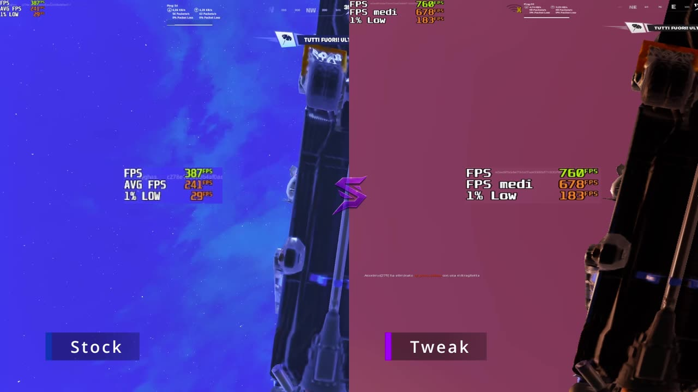

Come aumentare gli FPS su Fortnite (PC): guida 2026

Più FPS su Fortnite significa mira più fluida, edit più rapidi e meno scatti nei fight. In questa guida trovi tutto quello che puoi fare gratis, in ordine di importanza: prima le impostazioni del gioco, poi Windows, poi l'hardware.
1. FPS medi, 1% low e input lag: cosa conta davvero
- FPS medi: quanti fotogrammi al secondo fai in media. È il numero che tutti guardano.
- 1% low: gli FPS nei momenti peggiori, per esempio nei fight o quando costruisci. È quello che senti come "scatto". Spesso conta più degli FPS medi.
- Input lag: il ritardo tra il clic e l'azione sullo schermo. Meno è, più il gioco sembra reattivo.
Come misurarli: in Fortnite vai su Impostazioni → Video e attiva "Mostra FPS". Gioca sempre la stessa partita (per esempio Creativa) prima e dopo ogni modifica, così il confronto è onesto.
2. Impostazioni di Fortnite consigliate
Queste sono le impostazioni che danno più FPS perdendo meno visibilità. Le trovi in Impostazioni → Video e Grafica.
| Impostazione | Consiglio | Perché |
|---|---|---|
| Modalità finestra | Schermo intero | Meno input lag rispetto a finestra senza bordi. |
| Risoluzione | Quella nativa del monitor | Immagine nitida; abbassarla aiuta solo su PC molto deboli. |
| Limite frame rate | Pari agli Hz del monitor (o poco sopra) | FPS più stabili e GPU meno sotto stress. |
| Modalità di rendering | Prestazioni su PC medi/bassi | È la modalità più leggera; su PC potenti prova anche DirectX 12. |
| Scala di rendering 3D | 100% (mai sotto il 90%) | Sotto quella soglia l'immagine diventa sfocata e vedi peggio i nemici. |
| Distanza visiva | Media o alta | Serve a vedere giocatori e costruzioni da lontano. |
| Ombre, effetti, post-elaborazione | Disattivati / bassi | Sono le voci che pesano di più e non aiutano a giocare. |
| Texture | In base alla memoria della scheda video | Basse con 4 GB, medie con 6-8 GB, alte oltre. |
| V-Sync | Disattivato | Aggiunge input lag. |
| NVIDIA Reflex | Attivo + Boost (solo NVIDIA) | Riduce l'input lag. |
Attenzione: dopo un aggiornamento importante Fortnite a volte reimposta alcune voci. Ricontrolla le impostazioni a ogni nuova stagione.
3. Windows: le 6 cose da controllare
- Driver della scheda video aggiornati: scaricali dal sito NVIDIA, AMD o Intel. Driver vecchi sono una delle cause più comuni di cali di FPS.
- Frequenza del monitor: in Impostazioni → Schermo → Schermo avanzato controlla che il monitor sia davvero impostato a 144, 165 o 240 Hz e non a 60 Hz. Succede più spesso di quanto pensi.
- Modalità gioco: in Impostazioni → Giochi → Modalità gioco, tienila attiva.
- Registrazione in background: se non la usi, disattiva le acquisizioni in background della Xbox Game Bar.
- Programmi aperti: chiudi browser, launcher e overlay che non ti servono mentre giochi.
- Risparmio energia: sui portatili gioca con l'alimentatore collegato e la modalità "Prestazioni migliori".
4. Hardware: errori comuni che costano FPS
- Cavo del monitor collegato alla scheda madre invece che alla scheda video: sui PC fissi è un errore classico.
- RAM in single channel: con due banchi di RAM, montati negli slot giusti, Fortnite guadagna stabilità. Controlla anche che il profilo XMP/EXPO sia attivo nel BIOS.
- Temperature alte: se CPU o GPU si scaldano troppo, rallentano da sole. Pulire la polvere dalle ventole può fare la differenza.
- Gioco su disco lento: installare Fortnite su SSD riduce i caricamenti e alcuni scatti.
5. Fare tutto con un clic
Seguire questa guida richiede tempo, e alcune ottimizzazioni di Windows sono difficili da fare a mano senza rischi. SapoTweak è un programma per Windows che lo fa per te:
- Profilo Fortnite con un clic: legge le impostazioni attuali e il tuo hardware (scheda video, memoria, monitor) e ti mostra cosa cambierà prima di applicarlo.
- Oltre 150 ottimizzazioni di Windows pensate per il gaming, con backup automatico e ripristino in qualsiasi momento.
- Sicuro: non tocca l'anti-cheat né i file del gioco, e modifica le impostazioni solo a gioco chiuso.
- Supporto su Discord per qualsiasi dubbio.
Sulla home puoi vedere il confronto video prima/dopo su Fortnite, con FPS medi e 1% low.
Vuoi più FPS senza perdere tempo?
Prova SapoTweak: 9,99 € al mese, disdici quando vuoi.
6. Domande frequenti
Qual è la modalità di rendering migliore per gli FPS su Fortnite?
Su PC di fascia bassa o media la modalità Prestazioni dà quasi sempre più FPS. Su PC potenti DirectX 11 o DirectX 12 possono dare una grafica migliore con FPS comunque alti: prova entrambe e tieni quella con l'1% low più stabile.
Conviene abbassare la scala di rendering 3D?
Abbassarla dà FPS ma rende l'immagine sfocata e i nemici più difficili da vedere. Meglio tenerla al 100% e, solo se serve, non scendere sotto il 90%.
Ottimizzare Windows può causare un ban su Fortnite?
Cambiare le impostazioni di Windows o il file delle impostazioni del gioco non è un cheat. SapoTweak non tocca l'anti-cheat, i file del gioco o le mod: modifica le impostazioni solo a gioco chiuso e salva sempre un backup.
Perché ho tanti FPS ma il gioco scatta?
Conta l'1% low, cioè gli FPS nei momenti peggiori. Programmi in background, temperature alte, RAM in single channel o un limite FPS sbagliato causano cali improvvisi anche con FPS medi alti.
Giochi anche a Valorant? Leggi la guida per aumentare gli FPS su Valorant o quella per Rainbow Six Siege.